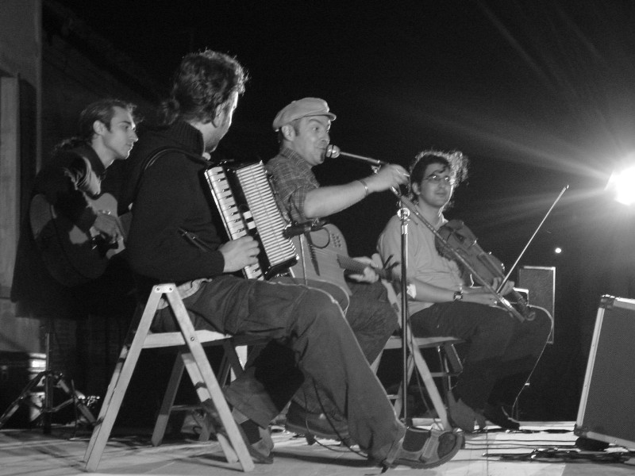
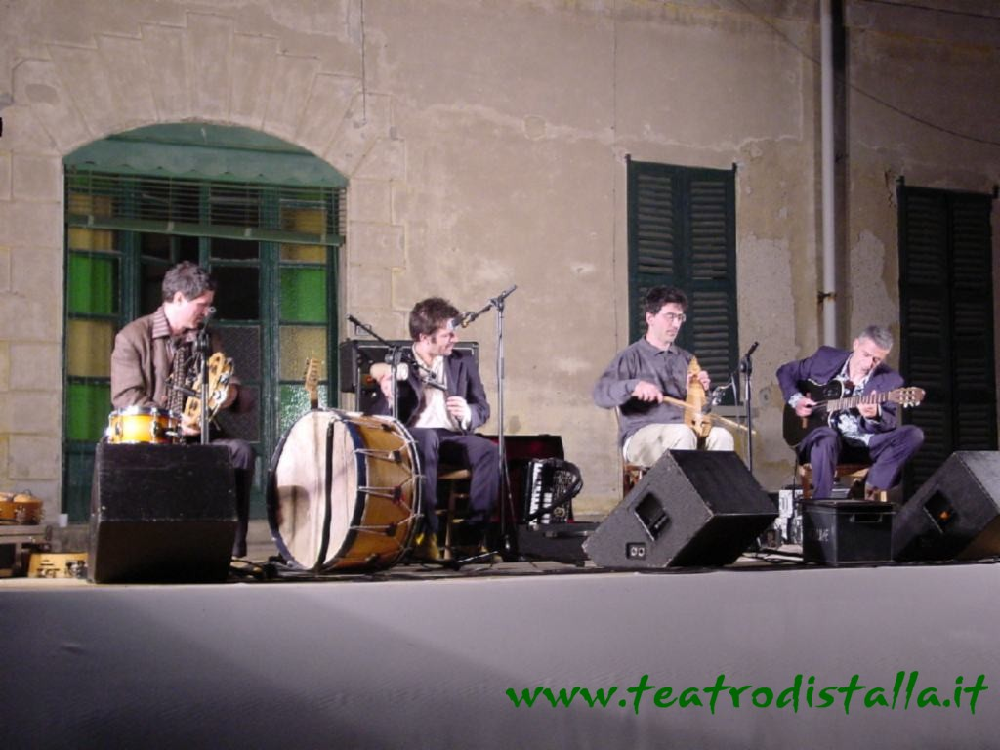

25
giugno 2002
Serata di poesia e musica in Cascina Ronco

Lo spirito della Cascina.
Riunirsi insieme la sera, finiti i lavori nei campi.
Qualcuno tira fuori una fisarmonica, qualcun altro un violino e poi cè
la chitarra e
si comincia a cantare e a ballare sullaia!
In questa serata è accaduto proprio questo.
Davide ha respirato questaria magica, fuori dal tempo e dagli
schemi e ha fatto vivere a tutti gli amici raccolti nellaia di
Cascina Ronco lintramontabile, inalterabile gioia di stare bene
insieme a fare cose belle e semplici.
Da buono sciamano del Lago ha saputo tenere lontano nuvole, zanzare e
caldo e ha suonato, cantato, raccontato di tutto un po per quasi due
ore.
Una serata davvero unica, con Davide Simeone Claudio Anga che
suonavano divertiti e facendo divertire tutti in uno scambio continuo di
battute con il pubblico, sempre attento e affettuoso.
Calorosa accoglienza per tutti e quattro i musicisti, con una novità:
la nascita spontanea di un fan club tutto speciale per il grande Simeone
da parte di alcuni giovani ammiratori.
La conclusione è semplice: più che positivo il concerto unplugged,
che ci permette di gustare un Davide più familiare, ma non sotto tono;
generoso il pubblico che ha dato un considerevole contributo a Cuore
Fratello.
30 Maggio 2004
La magia de "Il parto delle nuvole pesanti"
Gobba crescente, luna crescente,
sentenzia serio Ettore Castagna scrutando il cielo come un pastore.
Peppe Voltarelli gli fa eco, altrettanto convinto: Già già, e gobba
calante, luna calante.
Mica è così il proverbio. Però in una sera come questa ci sta tutto.
Tutto e il contrario di tutto.
Laia è vuota. Ci starebbero almeno mille persone, ce ne sono cento. La
luna guarda paziente, con la sua gobba crescente, i treni passano , gli
aerei sorvolano la cascina, e tra poco lo spettacolo inizia. I padroni di
casa oscillano fra leuforico (perché il Parto delle Nuvole Pesanti è a
casa loro!!!e per un concerto!!!), il deluso (perché non cè gente, non
cè gente, non cè gente!!!) e larrabbiato (perché poi non si lamentino
che non si organizza mai niente!!!).
Ma gli ospitamicispettatori sono lì belli placidi, con la loro brava
luna crescente che penzola sulle loro teste, il profumo rilassante di
camomilla e quello euforizzante della stalla, alcuni con lo stomaco
moderatamente sazio di ottimi tramezzini dellOltrepò e di buona birra,
altri con lo stomaco in attesa di saziarsi con le ghiottonerie che li
aspettano, su nel granaio. Tutti gli stomaci, però, sono in sintonia coi
cuori, e questi aspettano dalle orecchie il segnale.
Arriva, il segnale. Una zampogna, un canto spiegato, che sembra venire
davvero dai campi attorno. La musica riempie laria, la camomilla e il
letame, lamore e la morte, la dolcezza e la raggia.
I tre più uno suonano e cantano benissimo, lacustica in un posto così
vasto non è perfetta, ma lentusiasmo supplisce ai difetti tecnici.
Peppe intercala i pezzi con monologhi stralunati simili al proverbio
lunare, Salvatore e Amerigo non lo contraddicono, la gente ride e pensa.
(Ah,se ,anziché fabbriche di armi,mettessero fabbriche di fisarmoniche
come a Castelfidardo
e se tutti i musicisti andassero a Baghdad a
suonare per la pace
)
Due ore di concerto tirato, innumerevoli bis, come se volessero
ringraziarci per essere venuti, loro ringraziare noi
(ma del resto, il
Parto è famoso per costruire un mondo alla rovescia..chi cera a Segrate
2003 sa
)
E, sul finale, Peppe intona la sua Il ragazzo della via Gluck,
naturalmente reinventandola, naturalmente in omaggio alla Cascina.
Improvvisa ispirato, e qualcuno sente che lo spirito della cascina si è
impossessato di lui, proprio come quando, due anni fa, entrò in Davide
Van de Sfroos facendogli cantare la più bella Ventanas.
I treni e gli aerei continuano a passare, la luna continua a splendere,
i profumi e gli odori a spandersi. La musica è cessata. Ma i ricordi,
lamicizia, la ri-conoscenza resteranno. (dociciacini 02 Maggio 2004 da
"Il forum degli amici
di stalla")
|
|